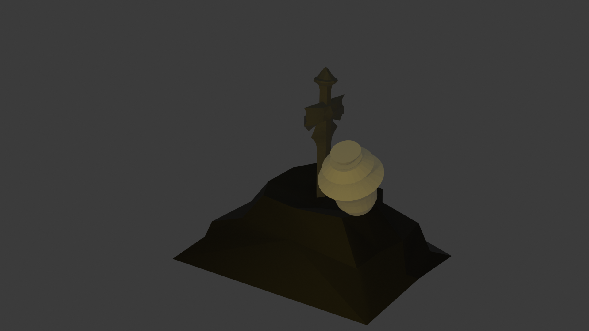

Ingeniería en Realidad Virtual y Diseño de Videojuegos
Universidad Bernardo O’Higgins · Santiago, Chile
PORTAFOLIO CREATIVO SANTIAGO, CHILE
Futuro diseñador de videojuegos · Artista 3D
Diseño personajes, modelo mundos y doy vida a ideas a través de experiencias interactivas.

Tecnología, arte y pensamiento creativo trabajando en conjunto.
Una muestra de procesos, experimentos y creación digital.
Este portafolio está en crecimiento. Nuevos proyectos se incorporarán a medida que avance mi proceso creativo.
Universidad Bernardo O’Higgins · Santiago, Chile
Formación técnico-profesional
¿Tienes una idea o proyecto?
Abierto a conectar, aprender y colaborar en nuevos desafíos creativos.